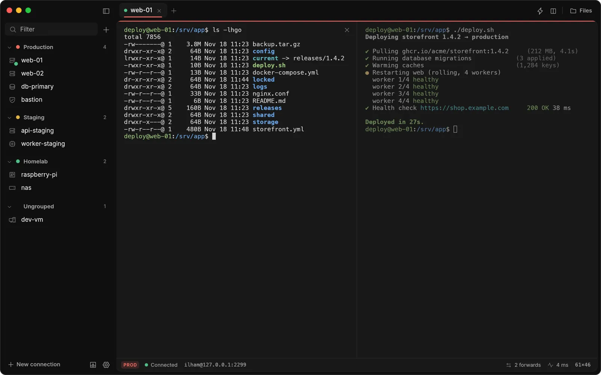
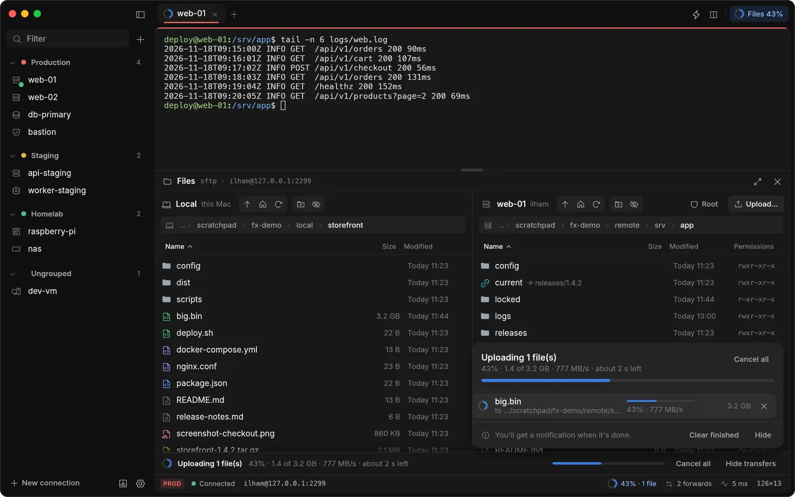
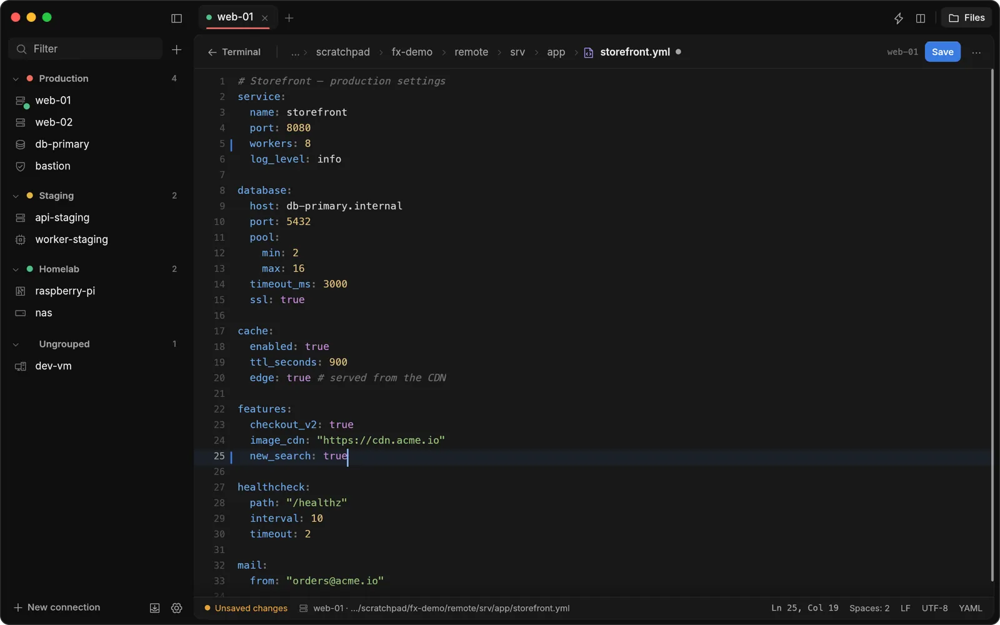

Which server
are you on?
A native SSH and SFTP client for macOS, Windows and Linux. Production shows in red and staging in yellow, from the sidebar to the edge of the terminal, so you know where you’re typing before you press Enter.

Click a server, press ⌘K, or open Files.
Bring what you already have. There is nothing to sign in to.
Small, quick, and quiet.
One binary, no Chromium and no Node.js underneath. TernaryShell draws its own window on the GPU, opens before you’ve looked away, and draws nothing at all while nothing changes.
Measured on an Apple Silicon MacBook with the release build.
Production looks like production.
Give a group a colour and a short tag such as PROD. Every connection in it carries the label: a dot in the sidebar, a line under its tabs, a stripe along the top of its terminal and the tag in the status bar.
- Set it from the group’s menu, a tab’s menu or Edit Connection. A connection can override its group.
- Nine colours. Icons stay neutral, so the colour only ever means where you are.
A real terminal that notices.
Split panes share their tab’s SSH connection. When the network changes under you, a VPN going up, another Wi-Fi, the Mac waking up, TernaryShell checks the server and says so within seconds instead of freezing.
- Built on alacritty_terminal: 24-bit colour, mouse reporting for vim, htop and tmux, IME, CJK, and box drawing that joins up.
- Reconnect keeps the scrollback; Enter in an ended pane starts a new shell there.
- 1 The red line under the tab: this is production.
- 2 Two panes, one connection.
- 3 The tag, the address, forwards and the round trip to the server.
This machine and the server, side by side.
The Files panel opens under the terminal, over the same connection. Drag between the two lists, drop from Finder or Explorer, and follow the batch: files done, speed and time left.
- Root reopens the server side through sudo, for the files your user can’t touch. The terminal stays as you.
- Files arrive under a temporary name and are renamed when complete. Cancel, close or quit, and no half-written file is left behind.

1The whole batch at a glance, with Cancel all. 2Root: browse and transfer as root through sudo. 3Symlinks say where they point.- 1 The whole batch at a glance, with Cancel all.
- 2 Root: browse and transfer as root through sudo.
- 3 Symlinks say where they point.
Change the config where it lives.
Double-click a file on the server to edit it in place, with line numbers, syntax colours and marks on the lines you changed. ⌘S writes it back.
- The new content is written next to the file and swapped in, so a dropped connection never leaves half a config.
- Line endings, a BOM and permissions are kept. If someone changed the file meanwhile, it tells you before saving.

1Only the lines you changed are marked. 2The path on the server, and Save.- 1 Only the lines you changed are marked.
- 2 The path on the server, and Save.
The parts of SSH you actually use.
Jump hosts
Reach a server through another saved one, like ssh -J, several in a row if you need. Each hop checks its own host key and logs in its own way.
Port forwarding
Local, remote and SOCKS forwards start with the connection. The status bar lists them, and a port that was taken gets a Retry.
Keys, agents and the keychain
Passwords and pasted keys live in the system keychain. Or log in through ssh-add, 1Password, Secretive, Bitwarden or a YubiKey; Pageant on Windows.
Host keys, checked
A new key is trusted with a click, never with Enter. A changed one shows the old fingerprints and waits until you say you checked. Hashed known_hosts and @revoked work.
Import with a preview
~/.ssh/config and Electerm exports come in with groups, keys and forwards. You see what will be added, changed or skipped first; importing twice changes nothing.
Updates that pick up where you were
It checks GitHub at start, verifies the download’s SHA-256, installs, and reconnects the sessions that were open.
Your hands stay on the keys.
On Windows and Linux the app’s shortcuts use CtrlShift, so every Ctrl+letter still reaches the remote shell.
Your servers are your business.
No account
Download it and connect. No sign-in, no plan, no trial, no cloud sync of your hosts.
No telemetry
Besides your own servers, TernaryShell talks to one place: GitHub, to check for updates. You can turn that off in Settings.
Open source
MIT licensed and built in the open with egui, alacritty_terminal and russh. Read it, build it, change it.
A minute from here.
TernaryShell keeps itself up to date after that. Then + in the sidebar adds a server, or Import brings in ~/.ssh/config.
Run this in Terminal recommended
It downloads the latest release, installs TernaryShell.app into /Applications and opens it. Run it again to update. macOS 12 or later, Apple Silicon and Intel.
curl -fsSL https://raw.githubusercontent.com/ilhamnadhif/ternaryshell/master/scripts/install.sh | bashOr download an installer
Homebrew
curl -fsSLO https://github.com/ilhamnadhif/ternaryshell/releases/latest/download/ternaryshell.rb
brew install --cask ./ternaryshell.rbDownload the installer
Windows 10 (1809) or later, x64. It installs for your user without administrator rights, adds a Start menu entry, and can put ternaryshell on the PATH.
Open a server from any terminal
ternaryshell web-01A saved connection’s name, or user@host:port for one that isn’t saved.
Install it
sudo apt install ./TernaryShell-1.6.5-linux-amd64.deb # Debian, Ubuntu
sudo dnf install ./TernaryShell-1.6.5-linux-x86_64.rpm # Fedora, RHELX11 or Wayland with OpenGL (a software renderer is fine), glibc 2.28 or later. Saved passwords go to the Secret Service: GNOME Keyring, KWallet or KeePassXC.
Is it really free?
Yes. TernaryShell is MIT licensed, with no account, no paid tier and no trial.
Where do my passwords and keys go?
Into the system’s keychain: the macOS Keychain, Windows Credential Manager, or the Secret Service on Linux. Never into TernaryShell’s own files, which hold only the connections, settings and known hosts, readable by your user alone.
Does it send anything anywhere?
Only a check with GitHub for a new release, which you can turn off in Settings → General. There is no telemetry, and crash reports stay in a log folder on your machine.
Can I bring my connections from Electerm or ~/.ssh/config?
Yes. Import reads Electerm exports, with nested groups, passwords and pasted keys, and ~/.ssh/config, including ProxyJump, forwards, IdentityAgent and Include. It shows what will be added, changed or skipped before anything is.
How do I move everything to another computer?
Export writes your connections, groups, labels and forwards to one JSON file, with the saved passwords and keys as plain text so the other machine can log in. Import it there, then delete the file.
Why does my system warn me about it?
The builds aren’t notarized or code-signed yet. On macOS, the one-line installer isn’t blocked; with the .dmg or .pkg, use Open Anyway in Privacy & Security. On Windows, SmartScreen asks once.